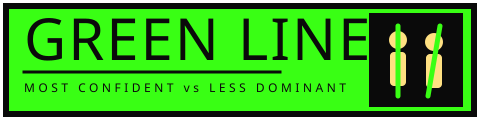

Pick an image to get started.

A TikTok relationship test. You draw a vertical green line through each person's body axis in a staged couple photo — the line of the straighter posture marks the more confident or dominant partner; the line that leans most marks the less dominant or more insecure partner.
No. The theory only applies to staged photos where both subjects knew the camera was there. It cannot be applied to candids — there's no intentional posture to read.
No. The page runs entirely in your browser using TensorFlow.js. The image is decoded and analysed locally; nothing is sent to a server.
Faces are detected with BlazeFace. For each face, the page crops a body region around it and runs MoveNet SinglePose to find shoulder and hip keypoints. The body axis is the line through the shoulder midpoint and hip midpoint, extended head-to-toe. The lean angle from vertical determines who's most confident vs least dominant.
If a subject's shoulders or hips are heavily occluded (raised arm, hand on partner, hidden behind clothing or another person), pose detection may not return confident keypoints. Try a clearer, head-to-toe photo.